Most focus tools optimize for discipline, and the pressure and guilt that come with it. DotDot is a mixed-reality companion for MR/AR glasses, designed for neurodivergent minds, that replaces rigid timers with a gentle, non-judgmental presence.
This page follows the project from one question: what if focus didn’t have to feel like a test? Four stages took it from interviews to a working focus loop.
Four stages — from listening to people, to finding where focus breaks, to designing a response, to prototyping it. The numbers match the sections below.
Treat distraction as a condition of the environment, not a failure of discipline.
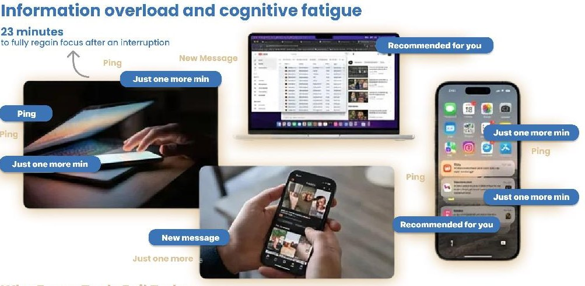
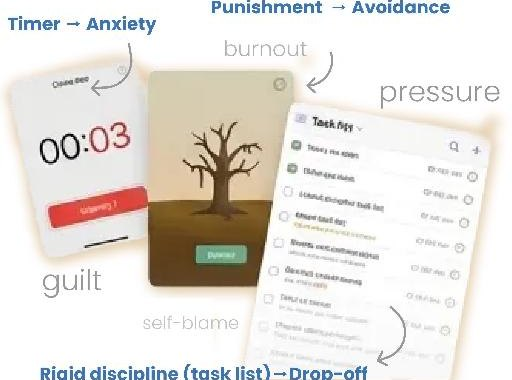
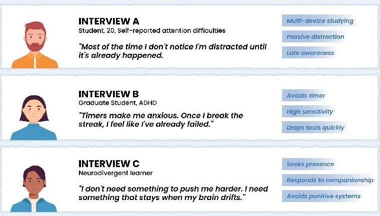
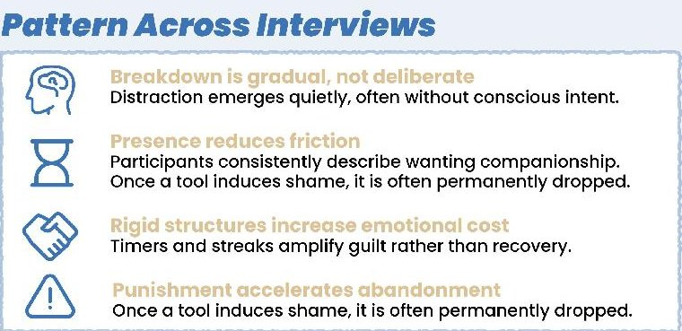
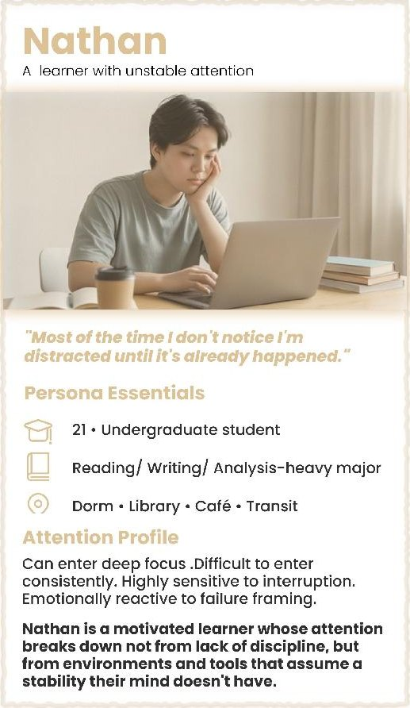
Design for the moment of breakdown, not for the plan.
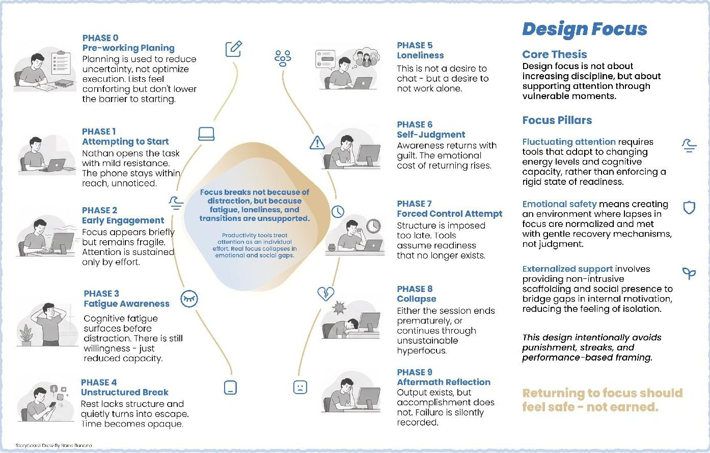
Dotty doesn’t reward productivity. It acknowledges effort.
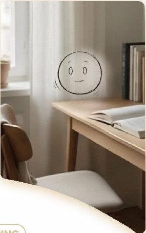
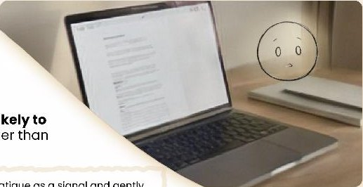
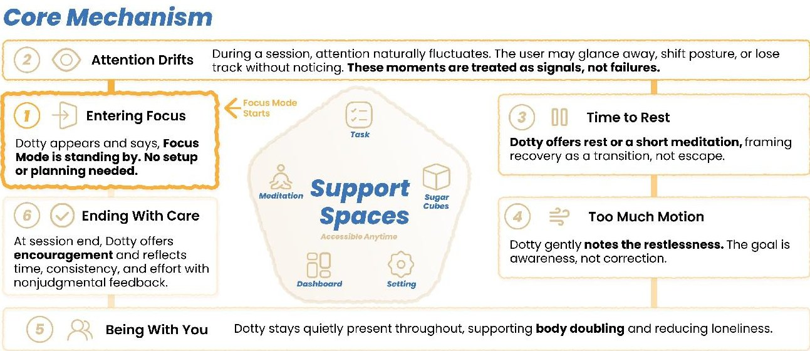
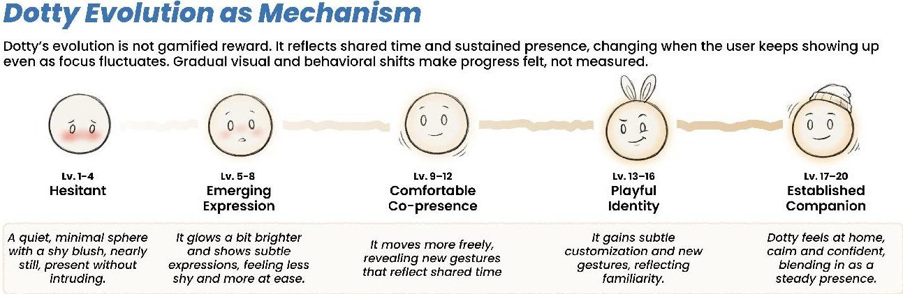
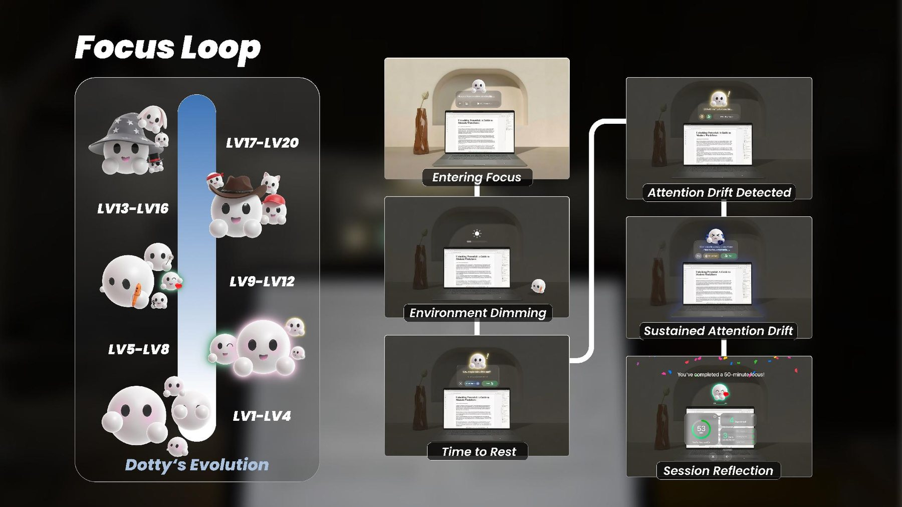
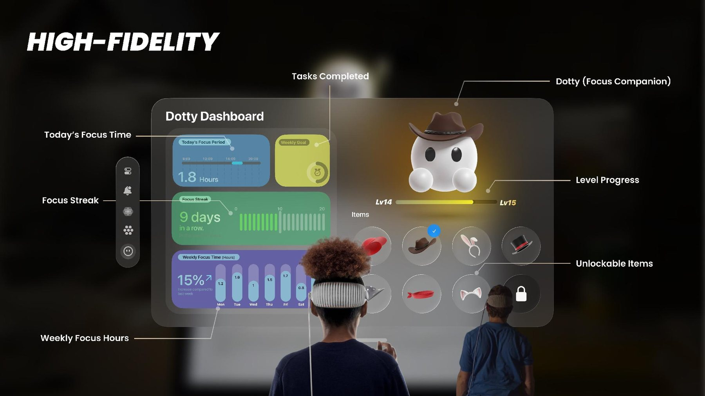
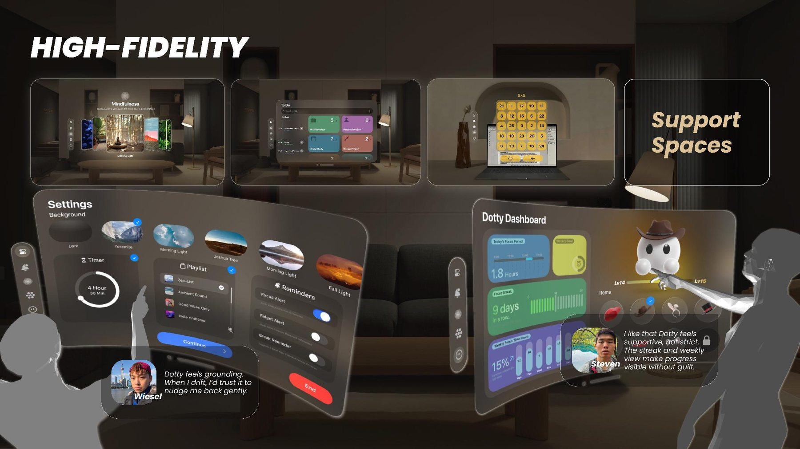
Make progress felt, not measured.
Start from the moment something breaks, not from a feature list.
Remove the first decision. If setup is a hurdle, begin before explaining.
Design for presence, not control.
Make progress felt, not measured.